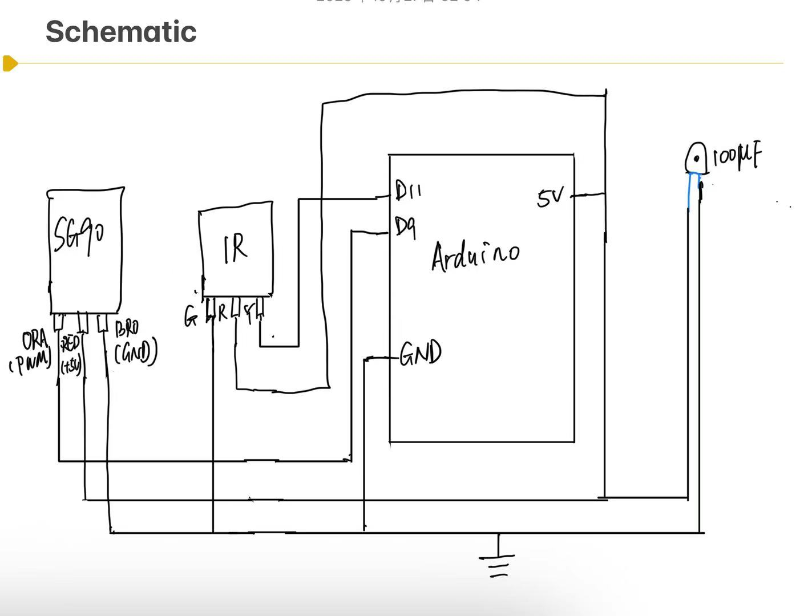
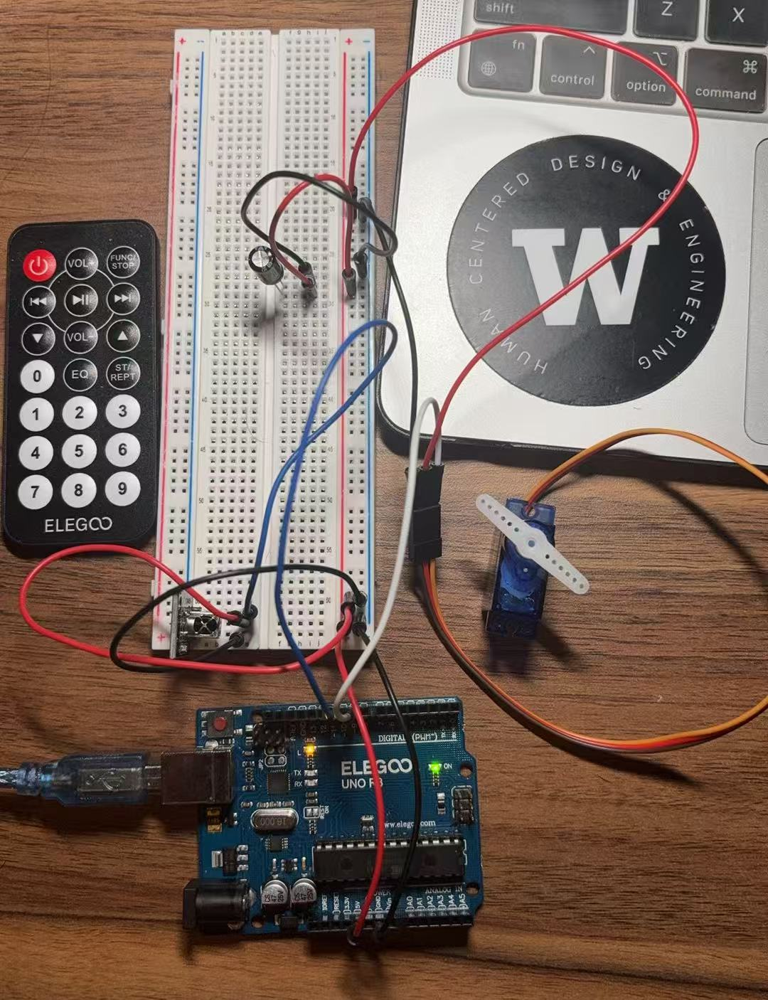

Schematic

schematic!
Circuit

circuit!
Circuit Operation

circuit's operation!
Firmware
// Import IR remote control library (v4.x uses .hpp)
#include
// Import the Servo library
#include
const int PIN_IR = 11; // IR receiver OUT
const int PIN_SERVO = 9; // Servo signal
Servo myservo;
int angle = 90; // Initial Angle
const int STEP = 10; // Step angle for each adjustment
void setup() {
// Start the serial port (115200 for easy observation)
Serial.begin(115200);
// Start infrared reception
IrReceiver.begin(PIN_IR);
// Connect the servo and center it
myservo.attach(PIN_SERVO);
myservo.write(angle);
// Start prompt
Serial.println(F("[IR->Servo v4] Ready. Press keys and watch 'protocol' + 'command'."));
}
void loop() {
if (IrReceiver.decode()) {
// Take out the reference of this decoding data for easy writing
auto &d = IrReceiver.decodedIRData;
// Print protocols, commands, and source codes to help you record
Serial.print(F("protocol="));
Serial.print(getProtocolString(d.protocol));
Serial.print(F(" command=0x"));
Serial.print(d.command, HEX);
Serial.print(F(" raw=0x"));
Serial.println(d.decodedRawData, HEX);
// Ignore duplicate frames or invalid commands
bool isRepeat = d.flags & IRDATA_FLAGS_IS_REPEAT;
if (!isRepeat && d.command != 0) {
switch (d.command) {
case 0x46:
// First use the dummy value 0x10, then use the "Volume +"
// on the remote control to replace the actual command
// value 0x46 on the serial monitor.
angle = min(angle + STEP, 180);
break;
case 0x15:
// The command of "Volume -" is the same as "Volume +",
// first replace it with a virtual value
angle = max(angle - STEP, 0);
break;
case 0x40: // "Center key" command
angle = 90;
break;
default:
// Other keys are not processed
break;
}
// Write the servo angle
myservo.write(angle);
// Print current angle
Serial.print(F("Servo angle = "));
Serial.println(angle);
}
IrReceiver.resume(); // Prepare to receive the next frame
}
}